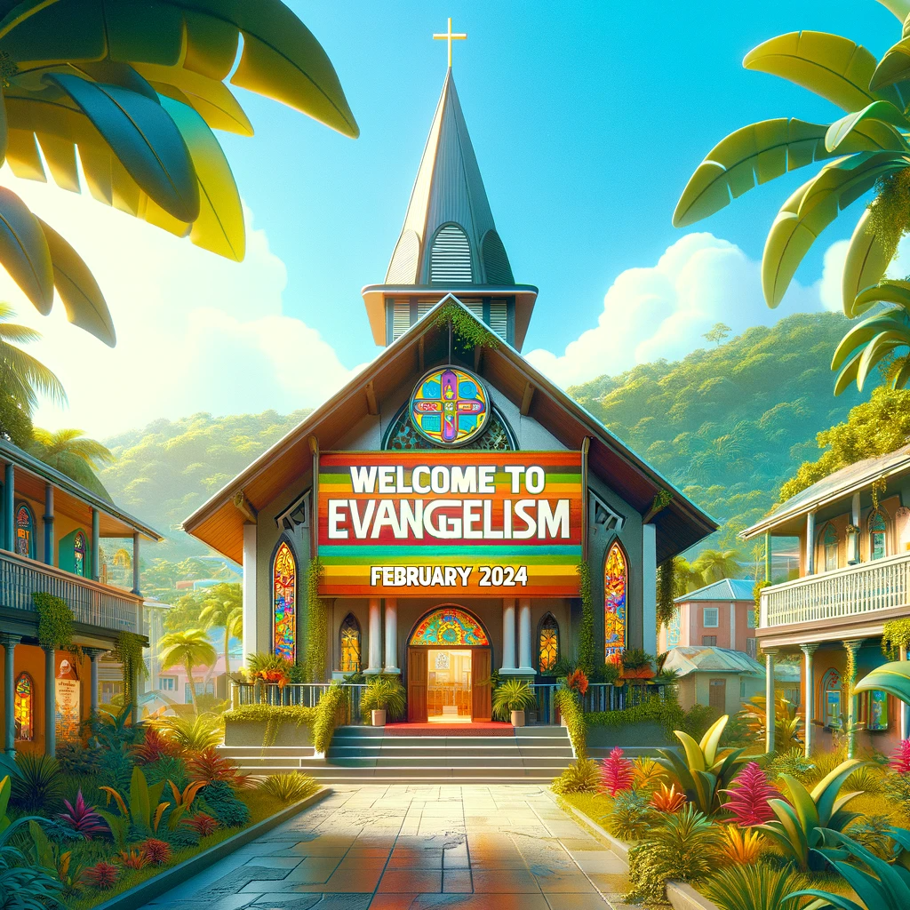

Week 1
Week 1: Introduction to Evangelism
Description: Focus on introducing the concept of evangelism. This could include sermons or discussions about the biblical basis for evangelism, the importance of sharing faith, and personal testimonies from church members. - Activities: Workshops on how to share one's faith, storytelling sessions, and introductory sessions for evangelism training
- Activities: Workshops on how to share one's faith, storytelling sessions, and introductory sessions for evangelism training